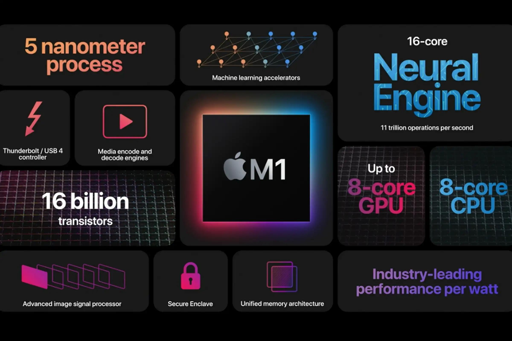

macOS

1. macOS Kirish
macOS — Apple Inc. tomonidan ishlab chiqilgan va faqat Mac kompyuterlari uchun mo'ljallangan operatsion tizimdir. 1984 yilda Macintosh operatsion tizimi sifatida tanishtirilgan macOS, hozirgi kunga kelib dunyodagi eng ko'p ishlatiladigan operatsion tizimlardan biri hisoblanadi. Uning interfeysi intuitiv va qulay bo'lib, foydalanuvchilarga yuqori darajada samarali ishlash imkonini beradi.

macOS o'zining yuqori xavfsizlik standartlari, kuchli ishlash ko'rsatkichlari va keng qamrovli dasturiy ta'minot ekotizimi bilan mashhur. Ushbu operatsion tizim ish va ijodiy jarayonlarda samaradorlikni oshiradi va foydalanuvchilarga keng imkoniyatlar taqdim etadi.
2. macOS Arxitekturasi
macOS arxitekturasi Unix asosiga ega bo'lib, kuchli xavfsizlik va ishonchlilikni ta'minlaydi. Quyida macOS arxitekturasi asosiy komponentlari haqida ma'lumot keltirilgan:
Kernel
macOS kernel — bu operatsion tizimning yuragi bo'lib, tizim resurslarini boshqarish va dasturlarni ishlatish uchun javobgardir. macOSning xNU Kernel (XNU: X is Not Unix) deb nomlangan kernel komponenti Unix va Mach mikro kernel arxitekturasi asosida qurilgan.
File System (Fayl Tizimi)
macOS fayl tizimi APFS (Apple File System) deb ataladi. APFS tezkor ishlash, yuqori xavfsizlik va ma'lumotlarning yaxlitligini ta'minlaydi. Bu fayl tizimi snapshot, klonlash va shifrlash kabi ilg'or funksiyalarni taqdim etadi.
Drivers (Drayverlar)
macOS drayverlar tizimi kexts (kernel extensions) orqali amalga oshiriladi. Kexts tizim drayverlarini va boshqa past darajadagi modullarni tizimga yuklaydi va ularni boshqaradi.
Application Frameworks (Dasturiy Ramkalar)
macOS dasturiy ramkalari (frameworks) Cocoa va Carbon kabi komponentlardan iborat. Cocoa Objective-C va Swift dasturlash tillarida yozilgan ilovalarni qo'llab-quvvatlaydi. Carbon esa eski dasturiy ta'minot bilan moslikni ta'minlash uchun ishlatiladi.
macOS arxitekturasi kuchli va ishonchli bo'lib, foydalanuvchilarga yuqori samaradorlik va xavfsizlik taqdim etadi. Kernel, fayl tizimi, drayverlar va dasturiy ramkalar macOSning asosiy komponentlari bo'lib, tizimning barqaror ishlashini ta'minlaydi.
3. macOS Foydalanuvchi Interfeysi
macOS foydalanuvchi interfeysi (UI) oddiy va intuitiv bo'lib, foydalanuvchilarga qulay va samarali ishlash imkoniyatini taqdim etadi. Quyida macOS UI ning asosiy elementlari haqida ma'lumot berilgan:
Dock
Dock — bu macOSning asosiy boshqaruv paneli bo'lib, tez-tez foydalaniladigan dasturlarni ishga tushirish va faol dasturlarni ko'rish imkonini beradi. Foydalanuvchilar Dock orqali dasturlarni tezda ochish va yopish imkoniyatiga ega.
Menu Bar
Menu Bar ekranning yuqori qismida joylashgan bo'lib, tizim va dasturiy menyularni o'z ichiga oladi. Menu Bar orqali foydalanuvchilar tizim sozlamalarini boshqarish va dasturlarni boshqarishlari mumkin.
Finder
Finder — bu macOSdagi fayllar va papkalar bilan ishlash uchun mo'ljallangan dastur. Finder orqali foydalanuvchilar fayllarni ko'rish, tahrirlash, ko'chirish va o'chirish imkoniyatiga ega. Finder interfeysi oddiy va intuitiv bo'lib, foydalanuvchilarga kerakli fayllarni tezda topish imkonini beradi.
System Preferences
System Preferences — bu macOSning asosiy sozlamalar paneli bo'lib, bu yerda foydalanuvchilar tizim sozlamalarini boshqarishlari mumkin. System Preferences orqali foydalanuvchilar tarmoq, xavfsizlik, foydalanuvchi hisoblari va boshqa ko'plab parametrlarni boshqarishlari mumkin.
Notification Center
Notification Center — bu foydalanuvchilarga tizim xabarlari va bildirishnomalarini ko'rsatadigan panel. Notification Center orqali foydalanuvchilar muhim xabarnomalarni ko'rib chiqish va ularga tezda javob berish imkoniyatiga ega.
macOS foydalanuvchi interfeysi qulay va samarali ishlashni ta'minlash uchun mo'ljallangan. Dock, Menu Bar, Finder, System Preferences va Notification Center kabi asosiy komponentlari foydalanuvchilarga tizimni boshqarish va kundalik vazifalarni bajarish imkoniyatlarini taqdim etadi. Ushbu elementlarning barchasi macOS operatsion tizimining foydalanish uchun qulay va samarali ekanligini ta'minlaydi.
4. macOS Dasturlarini Boshqarish
macOS operatsion tizimida dasturlarni boshqarish qulay va samarali funksiyalardan biridir. Quyida macOS tizimida dasturlarni boshqarishning asosiy usullari haqida ma'lumotlar keltirilgan:
Activity Monitor (Faollik monitori)
Activity Monitor — bu foydalanuvchilarga faol dasturlarni, jarayonlarni va tizim resurslaridan foydalanishni ko'rsatadigan qulay vositadir. Activity Monitor yordamida foydalanuvchilar dasturlarni to'xtatish, jarayonlarni tugatish va resurslar taqsimotini kuzatish imkoniyatiga ega.
System Preferences (Tizim sozlamalari)
System Preferences — bu macOSning asosiy sozlamalar paneli bo'lib, bu yerda foydalanuvchilar dasturlarni o'rnatish yoki olib tashlash, foydalanuvchi hisoblarini boshqarish va tizim xavfsizlik sozlamalarini o'zgartirishlari mumkin.
Launchpad
Launchpad — bu macOSda o'rnatilgan barcha dasturlarni ko'rsatadigan interfeys bo'lib, iOS uslubida dasturlarni ishga tushirish va boshqarish imkonini beradi. Launchpad orqali foydalanuvchilar dasturlarni tezda ochish va tartibga solish imkoniyatiga ega.
Applications Folder (Ilovalar papkasi)
Applications Folder — bu macOS tizimida o'rnatilgan barcha dasturlarni o'z ichiga olgan papka. Bu papka orqali foydalanuvchilar dasturlarni ko'rish, ochish va olib tashlash imkoniyatiga ega.
Mac App Store
Mac App Store — bu Apple tomonidan taqdim etilgan rasmiy dasturlar do'koni. Bu do'konda foydalanuvchilar turli xil dasturlarni yuklab olishlari va o'rnatishlari mumkin. Mac App Store orqali dasturlarni avtomatik yangilash ham amalga oshiriladi.
macOS operatsion tizimi dasturlarni boshqarishning bir necha qulay usullarini taqdim etadi. Activity Monitor, System Preferences, Launchpad, Applications Folder va Mac App Store kabi vositalar orqali foydalanuvchilar dasturlarni o'rnatish, olib tashlash, yangilash va boshqarish imkoniyatiga ega. Bu vositalar macOS tizimini samarali va qulay boshqarishni ta'minlaydi.
5. macOS Xavfsizligi
macOS operatsion tizimi foydalanuvchi ma'lumotlarini va tizim resurslarini himoya qilish uchun keng ko'lamli xavfsizlik funksiyalarini taqdim etadi. Quyida macOS xavfsizligini ta'minlashning asosiy elementlari haqida batafsil ma'lumot berilgan:
Gatekeeper
Gatekeeper — bu macOSning dastur xavfsizligini ta'minlash uchun mo'ljallangan vosita. Gatekeeper dasturlarni faqat ruxsat berilgan manbalardan yuklash va o'rnatishga imkon beradi. Bu vosita foydalanuvchilarni zararli dasturlardan himoya qiladi.
Xprotect
Xprotect — bu macOSning ichki antivirus tizimi bo'lib, zararli dasturlarni aniqlash va bloklash uchun foydalaniladi. Xprotect yangilanishlari avtomatik ravishda o'rnatiladi va tizimni yangi tahdidlardan himoya qiladi.
FileVault
FileVault — bu macOSdagi shifrlash vositasi bo'lib, foydalanuvchi ma'lumotlarini shifrlash va himoya qilish uchun mo'ljallangan. FileVault yordamida foydalanuvchilar o'z ma'lumotlarini shifrlab, ruxsatsiz kirishlardan himoya qilishlari mumkin.
Firewall (Olov devori)
macOS Firewall tizimni tashqi tarmoqdan keladigan tahdidlardan himoya qiladi. U kiruvchi va chiquvchi tarmoq trafikini nazorat qiladi va xavfsizlik siyosatiga asoslangan ravishda ruxsat berilgan yoki taqiqlangan trafikni belgilaydi. macOS Firewall foydalanuvchilarga qo'shimcha xavfsizlik qoidalarini sozlash imkonini beradi.
System Integrity Protection (SIP)
System Integrity Protection (SIP) — bu macOSning tizim yaxlitligini himoya qilish uchun mo'ljallangan xavfsizlik funksiyasi. SIP tizim fayllari va papkalarini ruxsatsiz o'zgartirishlardan himoya qiladi va bu orqali tizimning barqarorligini ta'minlaydi.
macOS operatsion tizimi xavfsizlikni ta'minlash uchun bir qator vositalarni taqdim etadi. Gatekeeper, Xprotect, FileVault, Firewall va System Integrity Protection kabi vositalar orqali tizimni va foydalanuvchi ma'lumotlarini himoya qilish mumkin. Bu vositalar macOS foydalanuvchilari uchun xavfsiz va ishonchli muhit yaratadi.